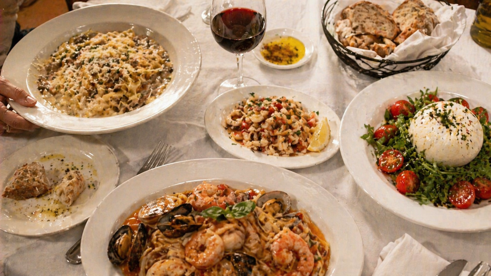

The kitchen rotates with the season.
Below is the current dinner menu. Lunch, family-style takeout, and desserts are accessible above. For tonight's specials, ask your server.

Below is the current dinner menu. Lunch, family-style takeout, and desserts are accessible above. For tonight's specials, ask your server.
